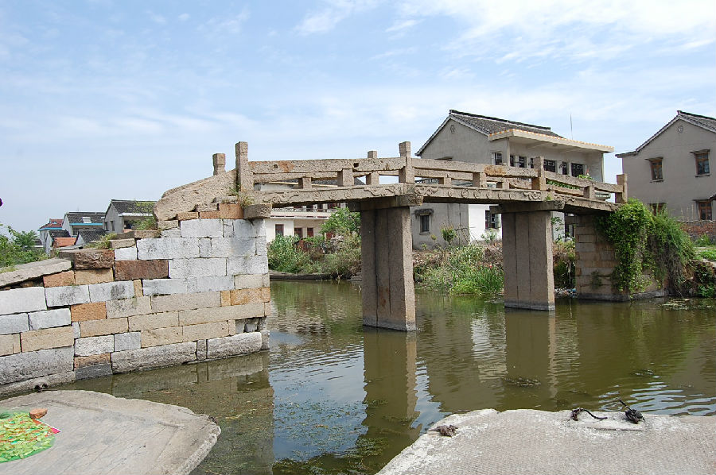

嘉兴市文物保护网 · 市级文物保护点 · 2020-11-09 · 原文

陆宣泾桥位于嘉兴市南湖区大桥镇建国村李埭自然村76号西南侧10米处。东西向跨长桥庙河，三孔有栏梁式石板桥。此桥始建上代不详，桥额旁镌有“光绪三十二年”字样，可见现桥重建于光绪三十二年（1906）。桥面由三块石板平铺而成，桥额为“重建陆宣泾桥”北侧刻有“儿孙福”“五口荣”，南侧刻有“文星口”“万事足”桥额及天盘石均刻有卷草纹，共8个天盘石，东西两侧分别有10级和7级台阶。桥全长21.72米，中间宽1.57米，桥梁距河面高3米。有栏梁式石板桥在嘉兴地区已很少见，陆宣泾桥形制美观，保存较好，有很高的历史文物价值和科学、艺术价值。2009年公布为市级文保点。